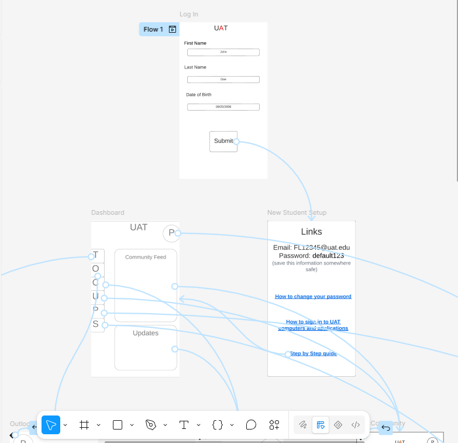
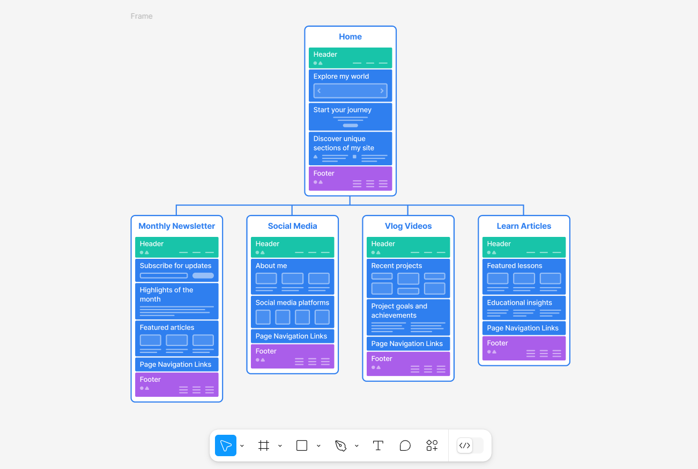
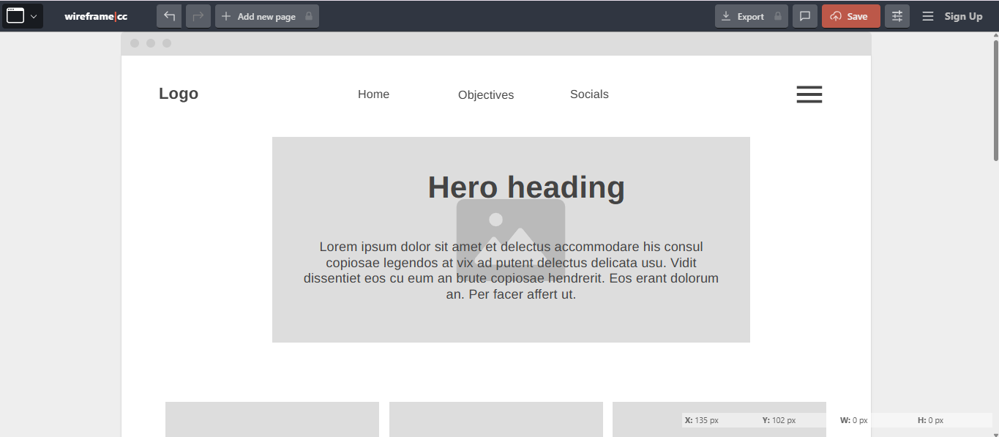

A mobile app for UAT students to have all of their resources from Teams, to Canvas, to
Community Posts, all in one place!

A website built in my first semester at UAT.

A website encompassing all of the best skills I've learned at UAT.
These projects analyze and address issues and attempt to solve them through software solutions. These projects were developed through multiple steps of the planning process. They used different ideation softwares and show progress from my first year at UAT to my last year here.
Project #1:
This project addresses the problem of incoming UAT students having difficulty locating all of their resources.
New students have to navigate using Outlook, Teams, Canvas, Discord, and every school profile on different social
media apps to recieve all of their information, updates, and schoolwork. This app centralizes all of those tools into
one place so students can easily access their schoolwork, community posts, and updates.
Project #2:
This project addresses the problem of school nurses not being able to accurately track student health information
such as injuries, medications, medication schedules, and care logs. Many schools still use outdated systems of thick
physical books that make finding updated information, like when a student last recieved a dose of medicine, tedious. This
uncertainty makes care difficult or altogether inaccessible. This infirmary log streamlines medical logging and makes it
possible for school administration to confidently manage student information, and provide accurate care.
Project #3:
This website was planned using Figma. I created thw wireframe using this software, and built the website
in Visual Studio code. This was a website I built in my first semester as UAT. I incorporated sound, images,
and personal elements to showcase my personal design. I love to see how my skills and design preferences have
developed since then!
Project #4:
I planned this website using Wireframe.cs. I built this website in steps, starting at planning the layout for
a mobile device as well as for desktops, planning the content and layout of the webpage, and then finalizing design elements.